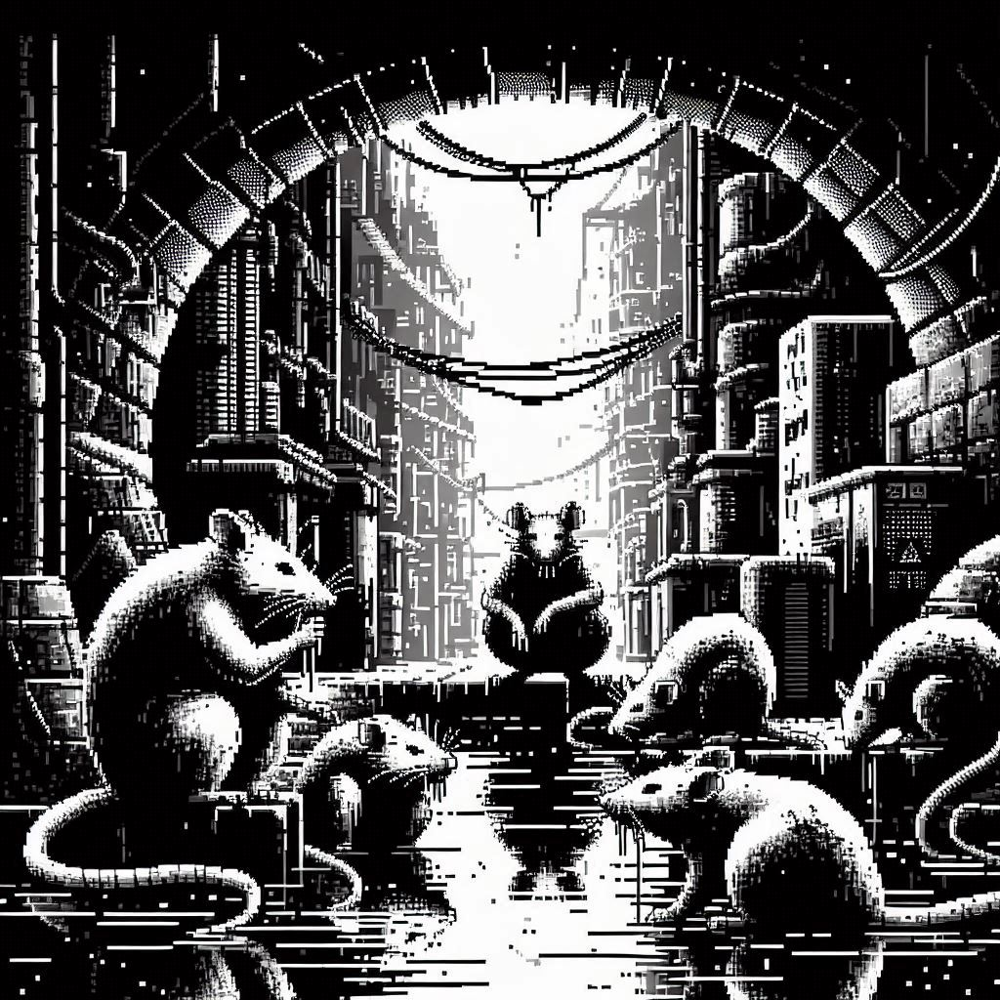

< 이전 페이지로
작성일: 2182년 5월 21일 21:35:01
의뢰인: 시청 미화행정과
중개인: @Fixer_Abbott
상세: 대단할 건 없고, 하수도에 쥐새끼들이 너무 많아서 해수구제 용역이 필요하대. 자세한 내용은 그쪽이랑 이야기해.

기본급 4000에 두당 400씩 챙겨주니까 생각 있으면 연락해.
@Shnobi34: 돌연변이 쥐인 건 왜 언급 안 하냐? 저번에 물려 뒤질 뻔 했어.